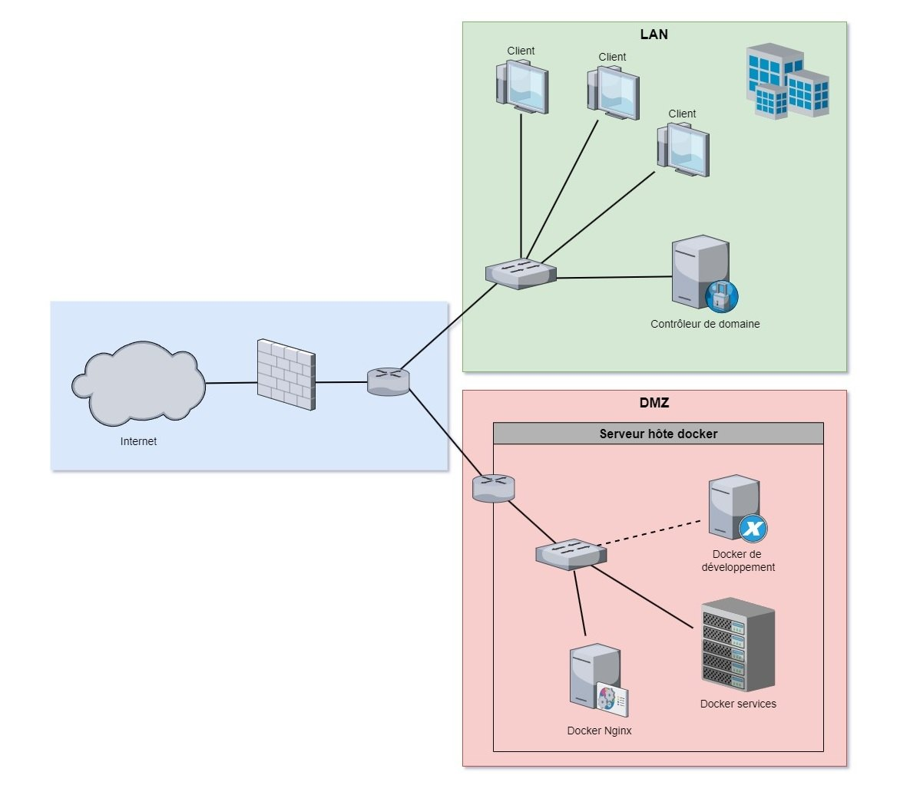

Projet n°10 : Audit de sécurité de l'entreprise fictive Securim
Contexte :
TP d'audit de sécurité en 3e année de BUT R&T, réalisé en binôme, sur une infrastructure de 8 machines virtuelles : pare-feu pfSense, contrôleur de domaine, poste client, serveur web, sonde et SIEM.
Objectif :
Auditer le système d'information de Securim en boîte noire, c'est-à-dire sans aucune information ni accès préalable, depuis une machine Kali Linux placée sur Internet.

Architecture de l'entreprise Securim, retrouvée pendant la phase de reconnaissance
Travaux :
Reconnaissance (OSINT) : recherche d'informations publiques sur l'entreprise et son architecture
Découverte : scan du point d'entrée avec Nmap
Test de la vulnérabilité Log4Shell (CVE-2021-44228) avec curl et un écouteur netcat
Fuzzing du site web avec DirBuster : découverte d'une zone protégée
Attaque par dictionnaire sur cette zone avec xHydra
Exploitation de Log4Shell sur la nouvelle ressource et obtention d'un shell distant
Début de l'escalade de privilèges
Toutes ces attaques ont été menées uniquement dans l'environnement de TP prévu à cet effet.